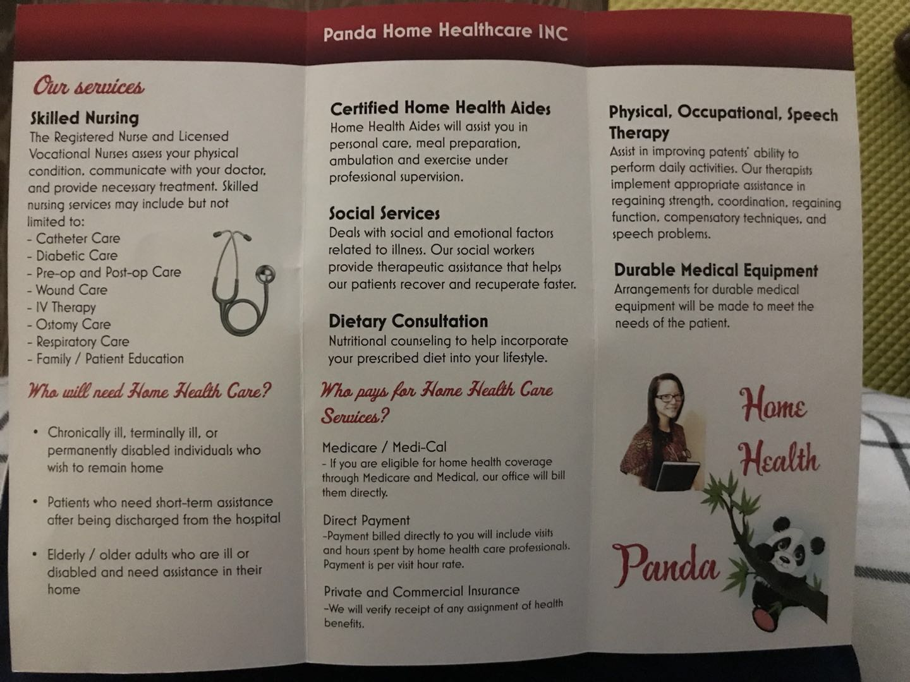
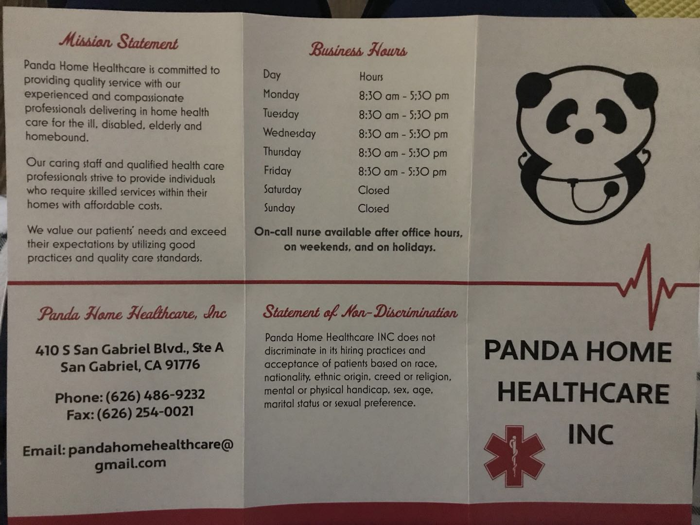

Panda Home Healthcare INC
Skipped Nursing
The registered Nurse and Licensed Vocational Nurses assess your physical condition, communicate with your doctor, and provide
necessary treatment. Skilled nursing services may include but not limited to:
- Catheter Care
- Diabetic Care
- Pre-op and post-op Care
- Wound Care
- IV Therapy
- Ostomy Care
- Respiratory Care
- Family/Patient Education
What will need Home Health Care?
- Chronically ill, terminally ill. or permanently disabled individuals who wish to remain home
- Patients who need short-term assistance after being discharged from the hospital
- Elderly/older adults who are ill or disabled and need assistance in their home
Certified Home Health Aides

